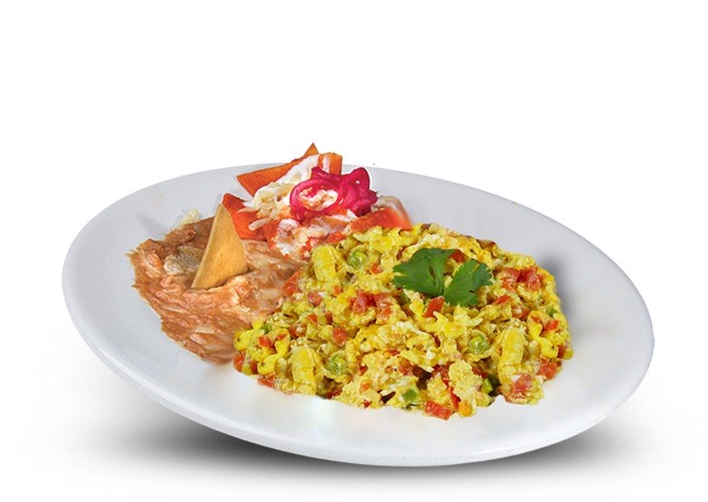

Mexican Eggs

Mexican eggs can be cooked in many ways, but here's a quick overview of one popular options:
- Sauté chopped onions, peppers (like jalapeño or poblano) and tomatoes in a pan.
- Add whisked eggs and scramble, mixing in chopped cilantro and spices like cumin and oregano.
- Serve with warm tortillas, salsa, and your favorite toppings like avocado, cheese, and crema.
Tips
- Adjust the spiciness by adding or removing seeds from the peppers.
- Use fresh, ripe ingredients for the best flavor.
- Experiment with different toppings and salsas.
BACK TO KITCHEN